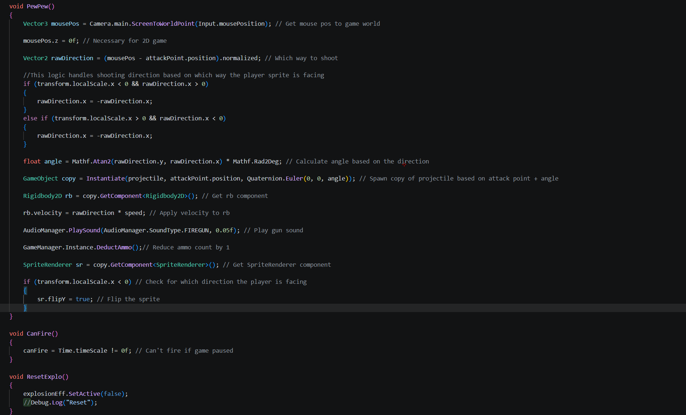
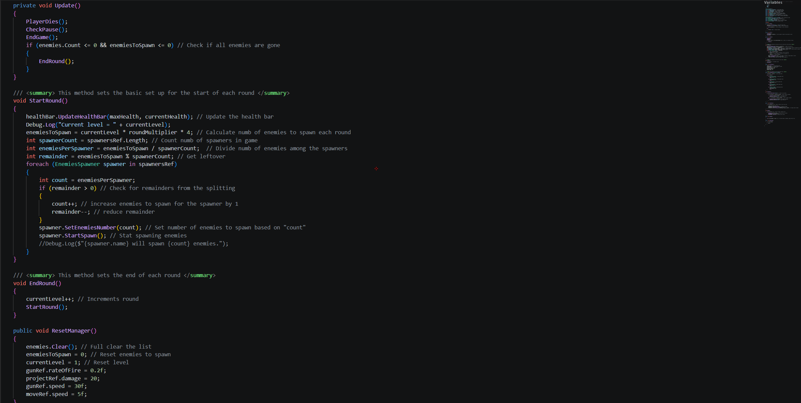

Insect Must Die
A complete 2D platformer built solo in Unity: clear waves of insects across levels of rising difficulty, using a gun and a range of power-ups. Every system coded from scratch in C#.
About the Game
Insect Must Die is a complete 2D platformer built in Unity. It opens with a dialogue intro covering the controls and story, then runs through a series of levels of scaling difficulty where you clear waves of insect enemies with a gun and a range of power-ups.
My Role
Built entirely by me — concept, design, and programming. I wrote every system in C#: player movement, directional shooting combat, enemy waves, and level progression, using Unity's tools for levels and assets. A complete, self-contained game loop built from scratch.

Key Features
The combat system includes a gun that shoots projectiles, checking what direction the player is facing and instantiating the bullet accordingly, it also plays particles and sound effects when firing.

Levels progression is managed by a level manager script that distributes the enemies to the spawner points, and checks when the player has defeated all the enemies to unlock the next level. The manager also includes a reset function called in Start, so that when the player dies and the level restarts, all enemies and stats return to their default values.
